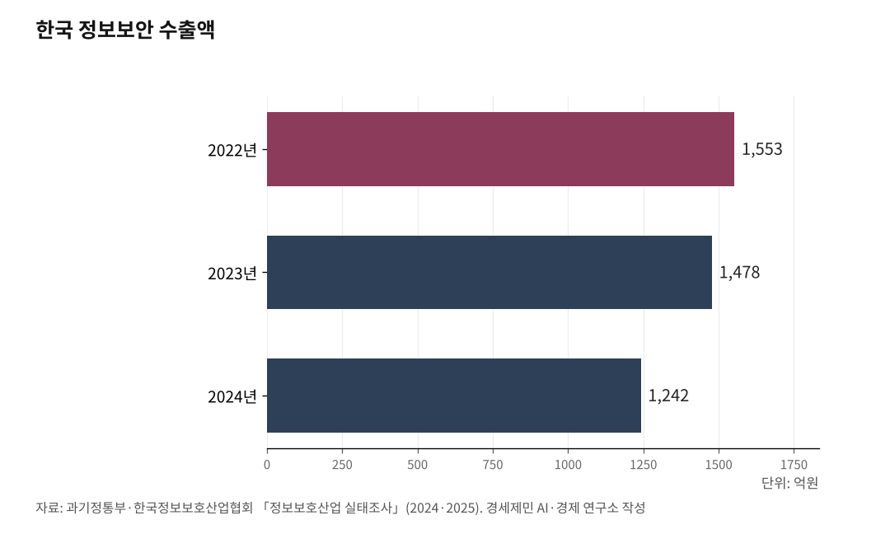

[포스트 미토스 AI ③] 한국 보안 18조 6000억, 글래스윙 밖에서 7월 패치 못 받는다
매출 90% 내수, 보안 수출 산업화와 인천 거점화 길
미국 인공지능 기업 앤트로픽이 2026년 4월 7일 출범한 글래스윙은 자체 인공지능 모형 '클로드 미토스 프리뷰'를 일반에 공개하지 않고 12곳 협력사에만 사이버 위협 정보와 사전 패치를 제공하는 사업이다. 7월 초 미토스 취약점이 일반 공개되기 전까지 사전 패치 정보를 받지 못한다는 뜻이다.

답은 두 갈래다. 한 갈래는 보안 산업을 수출 산업으로 키우는 길, 또 한 갈래는 인천을 사이버 보안 수출 거점으로 만드는 길이다.
1. 매출 18조 5945억 원, 수출은 10.07%
과학기술정보통신부와 한국정보보호산업협회는 2025년 11월 7일 「2025 정보보호산업 실태조사」 결과를 발표했다.
2024년 기준 한국 정보보호 산업 매출은 18조 5945억 원으로 전년 대비 10.5% 늘었다. 정보보안 7조 1244억 원, 물리보안 11조 4701억 원이다.
정보보안 기업은 876곳, 물리보안 기업은 904곳, 합계 1780곳이 활동했다. 한국 정보보호 산업 인력은 6만6367명으로 전년 대비 10.0% 늘었다.
같은 해 수출액은 1조 8722억 원이었다. 매출 대비 수출 비중은 10.07%다. 매출 90%가 내수에 머물고 있다는 뜻이다.
품목별로 보면 격차가 더 크다. 정보보안 매출 7조 1244억 원 가운데 수출은 1242억 원이다.
매출 대비 비중 1.74%다. 정보보안 100원어치 만들면 수출은 1원 70전에 그치고 있다.

2. 정보보안 수출 2년 연속 감소, 공공시장 의존 심화
정보보안 수출액은 2년 연속 두 자릿수 가까이 줄었다.
2022년 1553억 원에서 2023년 1478억 원으로 4.8% 줄었다. 2024년에는 다시 1242억 원으로 15.9% 감소했다(2024·2025 정보보호산업 실태조사).
내수 안에서도 공공시장 비중이 늘고 있다. 정보보안 매출 가운데 공공시장 비중이 2023년 39.1%에서 2024년 40.8%로 1.7%포인트 늘어났다(서울경제 2025.12.4. 보도).
같은 기간 민간 비중은 61%에서 59.2%로 1.8%포인트 줄었다.
장항배 중앙대 산업보안학과 교수는 같은 보도에서 "수출 감소, 공공 의존은 한국 보안 업계 구조적 문제"라고 진단했다.
업계는 공공시장 의존도가 더 깊어지면 세계 경쟁력 후퇴가 따라온다고 본다. 보안 기업이 자체 기술 개발에 쓸 돈이 줄어들고, 한국 산업 전반 사이버 방어 능력도 함께 떨어진다는 진단이다.
3. 위즈 47조, 사이버아크 35조 인수 사례
해외 사례는 다른 길을 보여준다.
구글이 사이버 보안 회사 위즈를 320억 달러(약 47조 원, 2026.4.27. 환율 기준)에 인수하기로 합의했다(구글 공식 발표 2025.3.18., 미국 증권거래위원회 8-K 공시).
위즈는 미국 뉴욕에 본사를 둔 회사다. 거래는 2026년 종결 예정으로, 미국 법무부 반독점 심사를 2025년 11월에 끝냈다.
팰로앨토네트웍스는 이스라엘 사이버 보안 회사 사이버아크를 250억 달러(약 35조 원)에 인수했다(팰로앨토네트웍스 공식 발표 2025.7.30., 거래 종결 2026.2.11.).
위즈 한 회사 가치만 한국 정보보안 산업 매출 7조 1244억 원의 6.6배다. 사이버아크까지 합하면 두 회사 가치 합계가 한국 정보보호 산업 매출 18조 5945억 원의 4.4배다.
장항배 교수는 "이스라엘은 사이버 보안 신생기업 육성을 국가 전략 한 축으로 삼아 관련 분야 거대 신생기업이 잇따라 탄생하고 있다"고 짚었다.
이어 "사이버 보안 수출 산업화는 가야 할 방향이자 갈 수 있는 길"이라며 "한국 보안 제품이 한국 자체 인공지능 생태계 안에서 검증되고 발전하면 자연스럽게 해외 수출 확대와 국제 표준화 대응으로 이어질 수 있다"고 덧붙였다(서울경제 2025.12.4. 보도).
4. 인천이 사이버 보안 수출 거점 될 조건
정부 「범부처 정보보호 종합대책」(2025.10.22. 과기정통부·국가안보실 등 6개 부처 합동) 4번째 추진 방향은 "글로벌 기준에 부합하는 정보보호 환경 조성과 정보보호 산업·인력·기술 육성"이다.
이 추진 방향을 인천에 시범 적용할 조건을 인천이 갖췄다.
인천국제공항이 2024년 국제선 여객 7066만9246명을 처리해 국제공항협의회(ACI) 기준 세계 3위에 올랐다(인천국제공항공사 2025.4.20. 발표). 두바이공항(9233만1506명), 런던 히드로공항(7919만4330명)에 이어 한국 인천공항이 처음으로 세 번째 자리에 들었다.
국제선 화물 처리는 290만6067톤으로 홍콩공항, 상하이공항에 이어 세계 3위다. 환승객은 823만4722명이었다(인천국제공항공사 2025.1.16. 발표).
인천공항은 24시간 통관 체계 유니패스(UNI-PASS, 관세청 첨단 전자 통관)를 운영해 세계 관세 기구 회원국 가운데 가장 빠른 통관 속도를 갖추고 있다.
인천항은 2024년 컨테이너 물동량 355만8455TEU(20피트 컨테이너 환산 단위)를 처리해 역대 최대를 기록했다(인천항만공사 2025.2.2. 발표). 국가별 수출 비중은 중국 66.0%, 수입 비중은 중국 56.2%였다.
송도 바이오 단지는 2025년 바이오 의약품 생산 능력이 103만5000리터를 기록해 세계 최대 바이오 의약품 생산 도시로 평가받고 있다(인천경제자유구역청 2026.2.18. 발표). 2030년에는 214만리터까지 늘어날 전망이다.
셀트리온, 삼성바이오로직스, 롯데바이오로직스, 에스케이바이오사이언스 등 바이오 의약품 회사가 송도에서 신약 임상 자료, 환자 정보, 생산 공정 자료를 매일 만들어낸다. 이 자료가 미국, 유럽, 아시아 의약품 규제 당국으로 보내진다.
자료가 국경을 넘는다는 것은 보안 위협도 국경을 넘는다는 뜻이다. 국제 보안 표준에 부합하지 않으면 신약 허가, 의약품 수출 자체가 막힐 수 있다.
이 셋이 만나는 자리에는 국제 물류 보안, 국경 간 자료 흐름 보안, 신약 연구 자료 보안 수요가 동시에 발생한다.
한국정보보호산업협회는 2030년까지 한국 정보보호 산업 매출 40조 원을 목표로 잡았다(아시아투데이 2025.11.10. 보도). 6년 안에 두 배 이상 키우겠다는 계획이다. 이 40조 원에서 수출이 차지할 비중을 어떻게 키울지가 한국 보안 산업이 풀어야 할 과제다.
7월 초 미토스 취약점 공개까지 두 달 남짓 남았다. 외형은 갖췄지만 정보망 위치를 바꾸지 않으면 18조 6000억 외형도 미토스 시대 위협 앞에 무력하다.
※ 이 기사는 인공지능 프로그램 클로드를 활용해 작성했습니다.
참고문헌
· "2025 정보보호산업 실태조사 결과 발표", 과학기술정보통신부·한국정보보호산업협회, 2025.11.7., https://eiec.kdi.re.kr/policy/materialView.do?num=273123
· "2024 정보보호산업 실태조사 본보고서", 과학기술정보통신부·한국정보보호산업협회, 2024.10.29., https://www.kisia.or.kr/research/infosec_industry_survey/
· "범부처 정보보호 종합대책", 국가안보실·과학기술정보통신부 등 6개 부처 합동, 2025.10.22., https://www.korea.kr/briefing/policyBriefingView.do?newsId=156722097
· "Google announces agreement to acquire Wiz", Google·Alphabet 8-K 공시, 2025.3.18., https://blog.google/inside-google/company-announcements/google-agreement-acquire-wiz/
· "Palo Alto Networks Announces Agreement to Acquire CyberArk", Palo Alto Networks 공식 발표, 2025.7.30., https://www.paloaltonetworks.com/company/press/2025/palo-alto-networks-announces-agreement-to-acquire-cyberark--the-identity-security-leader
· "2년간 수출 20% 줄어든 韓보안산업 '공공 의존 땐 기술도 후퇴'", 서울경제, 2025.12.4., https://www.sedaily.com/NewsView/2H1LNEKV0X
· "인천공항공사, 개항 이후 최초로 국제여객순위 세계 3위 달성", 인천국제공항공사, 2025.4.20., https://www.airport.kr/co_ko/664/subview.do
· "인천공항, 2024년 국제선 여객실적 역대 최다기록 달성", 인천국제공항공사, 2025.1.16., https://www.airport.kr/bbs/co_ko/84/138531/artclView.do
· "인천항, 2024년 역대 최대 컨테이너 물동량 기록 수립", 인천항만공사, 2025.2.2., https://www.icpa.or.kr
· "송도 바이오의약품 생산역량 올해 116만리터 도달", 인천경제자유구역청, 2026.2.18., https://www.ifez.go.kr
· "Project Glasswing", Anthropic, 2026.4.7., https://www.anthropic.com/glasswing
· "대규모 해킹에 흔들리는 신뢰…정보보호산업 '40조' 키워 불안 해소", 아시아투데이, 2025.11.10., https://www.asiatoday.co.kr/kn/view.php?key=20251110010004611
#포스트미토스AI #한국정보보호산업 #18조6000억 #글래스윙 #갈라파고스 #장항배교수 #범부처정보보호종합대책 #인천국제공항 #송도바이오단지 #인천보안수출거점